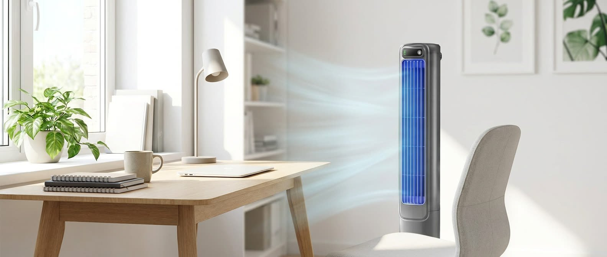
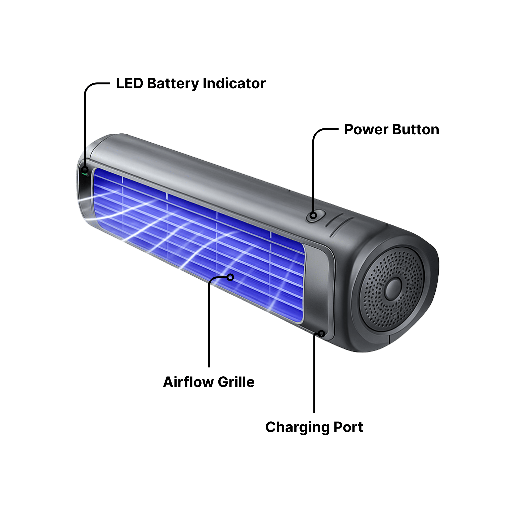
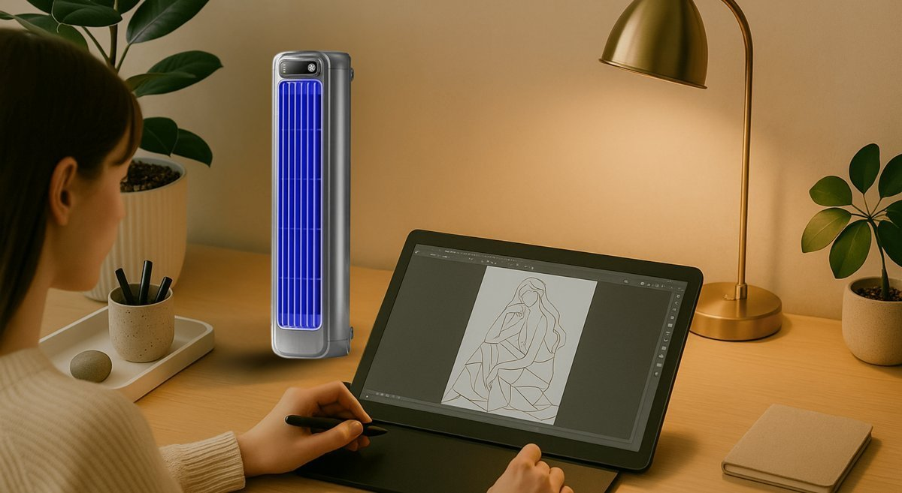

Un ingénieur marseillais démonte un climatiseur à 4 200 € — et construit un remplaçant à 59 € que les géants de la clim veulent enterrer
« Ma mère a failli mourir parce qu'elle ne pouvait pas se payer un devis de réparation à 4 200 €. Alors j'ai passé trois mois dans mon garage pour être sûr que ça n'arrive jamais à la mère de quelqu'un d'autre. » — Julien R., 47 ans, Marseille
Après que sa mère de 78 ans a failli suffoquer pendant une canicule brutale parce qu'elle ne pouvait pas s'offrir le devis de réparation, un vétéran du CVC fort de 15 ans d'expérience a reconçu l'appareil de zéro. Aujourd'hui, deux des plus grands fabricants de climatiseurs de France feraient tout pour que vous ne le voyiez jamais.
Le devis de réparation s'élevait à 4 200 €.
La mère de Julien, âgée de 78 ans, ne pouvait pas se le permettre. Alors elle est restée assise pendant trois jours dans une chaleur intérieure de 38 degrés, à siroter de l'eau tiède du robinet, en essayant de respirer.
Elle avait 78 ans. Vivant de sa petite retraite. Sa climatisation centrale l'avait lâchée trois jours plus tôt en pleine canicule marseillaise, et le devis de réparation — scotché au frigo de sa cuisine, écrit au stylo bille rouge — représentait plus de deux mois de ses revenus.
La mère de Julien dans son salon pendant la canicule — s'éventant avec un journal plié, un verre d'eau tiède du robinet à côté d'elle, la climatisation centrale hors service depuis trois jours.
Julien est monté dans sa camionnette et a parcouru les onze kilomètres jusqu'à chez elle en 14 minutes. Il a retiré le capot du compresseur de la climatisation centrale, a regardé le circuit de cuivre corrodé, et a fait quelque chose qu'il n'avait jamais fait en 15 ans de carrière comme ingénieur CVC dans le commercial.
Il s'est assis sur la terrasse et il a pleuré.
Puis il s'est mis en colère.
La révélation
Julien R. a passé quinze ans à concevoir des systèmes de climatisation pour des lieux où un seul degré de surchauffe coûte des millions d'euros : hôpitaux, fermes de serveurs, salles blanches pharmaceutiques. C'est l'homme que les directeurs d'hôpital appellent quand les soins intensifs chauffent à 3 heures du matin.
Alors quand il s'est retrouvé dans le salon de sa mère — à regarder un système de climatisation centrale vieux de 25 ans, qui avait coûté 8 000 € neuf et qui exigeait 4 200 € pour repartir — il a vu ce que la plupart des propriétaires ne voient jamais.
Trois mois. Sans amis. Rien que la fabrication. Julien soude à la main les circuits imprimés du premier prototype dans son garage à Marseille.
Il n'est pas retourné à son bureau cette semaine-là. Il est allé dans son garage.
Il a récupéré sur Leboncoin un condenseur de climatisation centrale en état de marche pour 90 € et il a commencé à le démonter, pièce par pièce. Des plans schématiques scotchés au mur. Les sondes du multimètre sur chaque contact. Une caisse de pièces de rechange sur l'établi. Pendant trois mois, il n'est pas allé dîner avec ses amis.
Quand il a eu terminé, il comprenait exactement pourquoi une réparation de climatiseur résidentiel coûte 4 200 € alors qu'une pompe à chaleur commerciale qui fait le même travail dans un hôpital coûte 300 €.
C'était surdimensionné exprès.
Le test

Le prototype Froza Cooler en marche dans le salon de Julien — et le thermostat à l'autre bout de la pièce affichait 20 °C à peine quatre minutes après qu'il l'a allumé.
Le premier prototype était laid. Une coque en plastique gris à moitié finie. Des fils qui dépassaient sur le côté. Un circuit imprimé vert que Julien avait soudé à la main. Un serpentin de refroidissement en cuivre et aluminium qu'il avait usiné à partir de matière brute dans son garage.
Il l'a posé dans le coin de son salon de 46 m² un samedi matin. Dehors, il faisait 34 degrés. À l'intérieur, son thermostat mural Honeywell affichait 34 aussi.
Il l'a branché et a lancé un chronomètre.
- 60 secondes : 29 °C
- 2 minutes : 24 °C
- 4 minutes : 20 °C
Une chute de quatorze degrés dans une pièce de 46 m². À partir d'une fine tour autonome que l'on peut porter d'une seule main. Consommant moins d'énergie que son micro-ondes.
Envie de voir l'appareil qui a fait baisser une pièce de 46 m² de quatorze degrés en quatre minutes ?
Julien et son équipe d'ingénieurs indépendants mènent une promotion de lancement limitée en vente directe aux consommateurs — jusqu'à 60 % de réduction dans la limite des stocks disponibles.
Comment ça fonctionne vraiment

Froza Cooler, décortiqué — le cœur TurboCool™, le serpentin de refroidissement en cuivre et aluminium derrière la grille de ventilation, le ventilateur de précision et le panneau de commande LED.
L'appareil que Julien a construit — finalement baptisé Froza Cooler — semble d'une simplicité trompeuse. C'est une fine tour autonome que vous pouvez poser sur un bureau, une étagère ou le sol — à peu près la hauteur d'une pile de livres — avec un petit panneau de commande LED sur le dessus et une rangée de volets de refroidissement sur l'avant.
C'est ce qu'il y a à l'intérieur qui a mis l'industrie de la clim mal à l'aise.
Plutôt que l'architecture encombrante compresseur-condenseur utilisée dans 80 % des foyers, le Froza Cooler utilise ce que Julien appelle un cœur TurboCool™ — un système d'échange thermique miniature conçu avec précision, tournant à 14 200 tr/min, qui ressemble davantage aux équipements de climatisation installés dans les data centers modernes qu'à tout ce que l'on trouve au rayon clim de chez Leroy Merlin.
Voici comment ça marche, en termes simples :
- L'appareil aspire l'air chaud de la pièce par ses grilles d'admission situées sur le dessus.
- Cet air passe sur un serpentin de refroidissement en cuivre et aluminium enroulé en spirale serrée — le même type que celui utilisé dans les échangeurs thermiques commerciaux, simplement miniaturisé.
- Le serpentin extrait rapidement la chaleur de l'air.
- Un petit ventilateur de précision renvoie l'air désormais froid dans la pièce à travers les volets frontaux.
- La condensation qui nécessiterait normalement un tuyau d'évacuation ou un réservoir d'eau ? Elle s'évapore à l'intérieur de l'appareil. Rien à vider. Rien à fixer à l'extérieur de la maison.

Installation réelle d'un client. Opérationnel en moins de 60 secondes. Sans artisan. Sans perçage. Sans tuyau d'évacuation.
L'ensemble fonctionne sur une simple prise murale de 230 volts. Aucun câblage spécial. Aucun perçage dans votre mur. Aucun tuyau d'évacuation. Aucun compresseur extérieur.
Il est prêt à l'emploi dès l'instant où vous le branchez. Et lors de tests indépendants, il refroidit des pièces jusqu'à 51 m² jusqu'à 16 degrés en utilisant une fraction de l'électricité qu'engloutit une climatisation centrale.
Pourquoi ça cartonne
En huit mois, depuis que le Froza Cooler est discrètement arrivé sur le marché, plus de 9 800 familles françaises ont laissé des avis 5 étoiles vérifiés. Voici ce qui, selon elles, les pousse à le recommander :
- Jusqu'à 75 % moins cher à faire fonctionner qu'une clim centrale — les locataires rapportent des baisses de facture d'électricité de 80–200 € par mois en été.
- Un refroidissement rapide et puissant — fait baisser une pièce de plus de 10 degrés en quelques minutes et remplace les climatiseurs de fenêtre encombrants et qui fuient.
- Installé en moins de 60 secondes — posez-le, branchez-le, allumez-le. Sans artisan. Sans permis. Sans perçage.
- Silencieux comme un murmure — à peine audible d'un bout à l'autre de la pièce. Les locataires disent dormir toute la nuit pour la première fois depuis des années.
- Ne refroidissez que les pièces que vous utilisez — si vous avez déjà une clim centrale, baissez le thermostat de 3 degrés et laissez le Froza Cooler s'occuper de la chambre. Les économies s'accumulent vite.
Images réelles d'un client. Le Froza Cooler en marche à côté du canapé d'angle. Le salon a chuté de 12 °C en moins de 8 minutes.
Profitez de la remise de lancement avant qu'elle ne soit à nouveau épuisée
Le Froza Cooler a déjà été en rupture de stock trois fois cette année. La promotion de lancement actuelle est de 50 % de réduction sur une unité ou 60 % sur le lot de deux — et l'expédition est gratuite avec une garantie satisfait ou remboursé de 30 jours.
L'étouffement de l'affaire
Dans les six semaines qui ont suivi le lancement discret du Froza Cooler fin 2025, deux des plus grands fabricants de climatiseurs résidentiels de France auraient contacté la petite équipe d'ingénieurs de Julien.
Ils n'ont pas demandé à obtenir une licence sur la technologie.
Ils lui ont proposé un montant à sept chiffres pour la retirer du marché — signer un accord de confidentialité, ranger la conception au placard, s'en aller.
Une reconstitution du moment où Julien a repoussé l'enveloppe kraft sur la table.
Julien a refusé les deux offres dans la même semaine. Au contraire, il a redoublé d'efforts. Il s'est associé à un petit groupe d'ingénieurs indépendants en qui il avait confiance, a totalement court-circuité la chaîne de distribution traditionnelle — sans marge Leroy Merlin, sans frais de distribution Castorama — et a proposé le Froza Cooler directement aux consommateurs à une fraction du prix d'un refroidisseur portable comparable chez Darty ou en grande surface.
De vrais clients, de vrais avis
Un petit échantillon parmi les plus de 9 800 avis 5 étoiles vérifiés :
Je suis locataire et mon propriétaire refusait un climatiseur de fenêtre. Le Froza Cooler s'installe en cinq minutes et ma facture d'électricité a baissé de 130 € le premier mois. J'en achète un deuxième pour la cuisine.
J'ai le sommeil léger et mon vieux climatiseur de fenêtre me rendait folle. Cet appareil est silencieux comme un murmure. J'oublie même qu'il est allumé. Ma chambre reste exactement à 19 degrés toute la nuit.

J'étais sur le point de me résigner à une réparation de climatisation centrale — le même devis exact de 4 200 € dont parle cet article. J'ai acheté deux Froza Cooler à la place. Coût total : moins de 150 €. Pas de regrets.
Ce que ça coûte
À titre de comparaison :
| Option | Coût initial | Installation | Coût récurrent |
|---|---|---|---|
| Réparation clim centrale | 3 200 € – 4 500 € | Artisan requis | Électricité élevée |
| Nouvelle clim centrale | 7 500 € – 12 000 € | Permis + plusieurs jours de travaux d'artisan | Électricité élevée |
| Système mini-split | 3 500 € – 6 000 € | Artisan + perçage du mur extérieur | Électricité modérée |
| Climatiseur de fenêtre | 200 € – 500 € | Bloque la fenêtre, laisse passer la chaleur | Électricité élevée, bruyant |
| Froza Cooler | 89,95 € (lancement) | Installation en 60 s | Jusqu'à 75 % de moins qu'une clim centrale |
Au prix de vente normal, le Froza Cooler est à 179,90 € — déjà une fraction du prix d'un refroidisseur portable comparable.
Avec la promotion de lancement actuelle, il est à 89,95 € l'unité (50 % de réduction) ou 74,98 € pièce sur le lot de 2 (60 % de réduction).
C'est moins qu'un mois de facture d'électricité estivale pour la plupart des familles françaises.
Ce qui est inclus avec chaque Froza Cooler :
- 1× refroidisseur portable Froza Cooler
- Télécommande avec les 6 modes
- Câble de charge USB-C + guide de démarrage rapide
- Livraison gratuite (France)
- Garantie satisfait ou remboursé de 30 jours
- Garantie constructeur 1 an
Un mot d'avertissement
Le Froza Cooler a déjà été en rupture de stock trois fois distinctes cette année.
Les météorologues annoncent l'un des étés les plus chauds depuis des décennies — et l'équipe de Julien produirait aussi vite que son réseau de fournisseurs indépendants peut expédier. Une fois cette promotion de lancement terminée, ils ne s'engagent pas à la ramener au même prix.
La production actuelle qui part de l'entrepôt indépendant de Julien. Une fois ce lot écoulé, les prix sont réinitialisés.
SANS
RISQUE
Garantie satisfait ou remboursé de 30 jours
Si vous ne sentez pas la différence chez vous en une semaine, renvoyez-le pour un remboursement intégral. Aucuns frais de réapprovisionnement. Aucune question posée.
— Camille
P.-S. — Les lecteurs n'arrêtent pas de demander si le prix de lancement va vraiment expirer. D'après l'équipe de Julien : oui. Le prix actuel n'est verrouillé que pendant l'expédition de la première production. Après ça, il repasse à 179,90 €. Si l'idée de remplacer un devis de réparation à 4 200 € par un refroidisseur portable à 89,95 € vous séduit, faites-le maintenant — pas après la réinitialisation du prix. La prochaine réinitialisation est prévue pour cet été, juste au moment où les canicules frappent. — C.L.